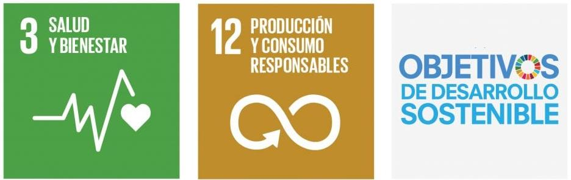
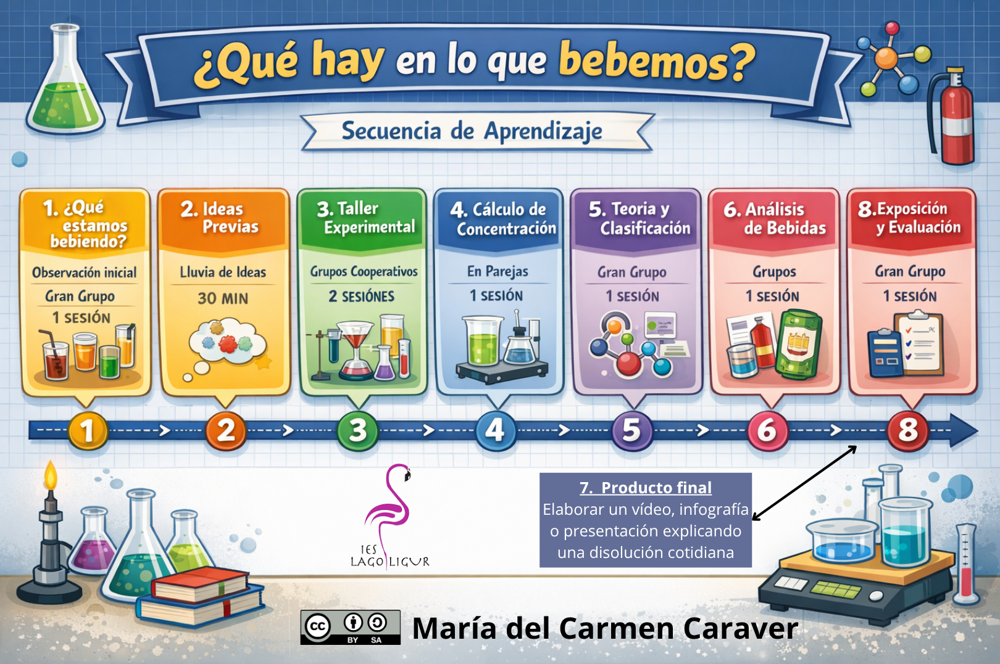

Justificación didáctica
La presente Situación de Aprendizaje, centrada en el estudio de las mezclas y disoluciones a partir de ejemplos cercanos al alumnado como las bebidas de consumo habitual, se plantea desde un enfoque competencial, práctico y contextualizado, favoreciendo que el alumnado de 2º de ESO comprenda fenómenos científicos presentes en su vida cotidiana.
A través de la observación, la experimentación y el análisis de situaciones reales, el alumnado construye el conocimiento científico de manera activa, desarrollando destrezas propias del trabajo científico como la formulación de hipótesis, la observación sistemática, la experimentación en el laboratorio, la interpretación de resultados y la comunicación de conclusiones.
La propuesta conecta con los intereses y experiencias cercanas del alumnado, favoreciendo la motivación y el aprendizaje significativo. Además, incorpora metodologías activas y participativas mediante el trabajo cooperativo, la resolución de problemas, el aprendizaje basado en la indagación y la elaboración de un producto final de divulgación científica.
Esta Situación de Aprendizaje contribuye especialmente al desarrollo de los siguientes Objetivos de Desarrollo Sostenible (ODS):
- ODS 3: Salud y bienestar, promoviendo la reflexión sobre la composición de bebidas de consumo cotidiano y la importancia de interpretar correctamente la información presente en las etiquetas alimentarias.
- ODS 12: Producción y consumo responsables, fomentando el pensamiento crítico sobre los productos que consumimos, su composición y el uso responsable de sustancias y materiales tanto en el entorno cotidiano como en el laboratorio.

Asimismo, la propuesta integra diversos principios pedagógicos recogidos en la LOMLOE, entre los que destacan:
- Aprendizaje competencial y significativo, relacionando los contenidos científicos con contextos reales y cercanos al alumnado.
- Metodologías activas, situando al alumnado como protagonista de su propio aprendizaje mediante la experimentación, la investigación y la creación de productos.
- Trabajo cooperativo e inclusión educativa, favoreciendo la participación activa de todo el alumnado y el desarrollo de habilidades sociales y comunicativas.
- Desarrollo de la competencia digital, mediante la elaboración de presentaciones, vídeos o infografías como producto final.
- Educación para el pensamiento crítico, promoviendo el análisis y la interpretación de información científica presente en etiquetas y productos comerciales.
- Evaluación formativa y continua, incorporando procesos de autoevaluación y coevaluación que favorecen la reflexión sobre el propio aprendizaje.
En conjunto, esta Situación de Aprendizaje permite al alumnado adquirir conocimientos científicos básicos sobre mezclas y disoluciones, al tiempo que desarrolla competencias clave necesarias para comprender e interpretar el mundo que le rodea desde una perspectiva científica, crítica y responsable.
Elementos curriculares
Competencias específicas:
- Interpretación de fenómenos naturales: Identificar y describir fenómenos físicos y químicos cotidianos utilizando terminología científica adecuada.
- Indagación y metodología científica: Plantear hipótesis, buscar evidencias y experimentar para resolver situaciones problemáticas, fomentando el pensamiento crítico.
- Aplicación de saberes básicos: Utilizar conceptos de la materia (estructura, estados, cambios) y fuerzas para explicar el mundo físico.
Criterios de evaluación:
- 1.1. Identificar, comprender y explicar, siguiendo las orientaciones del profesorado, en su entorno próximo, los fenómenos fisicoquímicos cotidianos más relevantes, explicarlos en términos básicos de los principios, teorías y leyes científicas estudiadas y expresarlos con coherencia y corrección, utilizando al menos dos soportes y dos medios de comunicación.
- 2.1. Aplicar, de forma guiada, las metodologías propias de la ciencia para identificar y describir fenómenos que suceden en el entorno inmediato a partir de cuestiones a las que se pueda dar respuesta a través de la indagación, la deducción, el trabajo experimental y el razonamiento lógicomatemático, reflexionando de forma argumentada acerca de aquellas pseudocientíficas que no admiten comprobación experimental.
- 3.1. Emplear datos a un nivel básico y en los formatos que se indiquen para interpretar y transmitir información relativa a un proceso fisicoquímico concreto, relacionando entre sí lo que cada uno de ellos contiene, y extrayendo en cada caso, siguiendo las orientaciones del profesorado, lo más relevante para la resolución de un problema.
Relación de actividades con criterios de evaluación:
Temporización

La presente Situación de Aprendizaje se desarrollará a lo largo de 8 sesiones de aproximadamente 1 hora cada una. La secuenciación se ha organizado siguiendo una progresión que parte de la motivación inicial y las ideas previas del alumnado, avanza hacia la experimentación y la construcción del conocimiento científico, y finaliza con la aplicación práctica y la elaboración de un producto final.
Las primeras sesiones se centran en la exploración y manipulación de mezclas y disoluciones mediante actividades prácticas y experimentales. Posteriormente, se introducen y estructuran los contenidos teóricos relacionados con los tipos de mezclas, las disoluciones y el cálculo de concentraciones. Finalmente, las últimas sesiones se dedican a la aplicación de los aprendizajes en contextos reales, la elaboración del producto final y la evaluación mediante exposición, autoevaluación y coevaluación.
La distribución temporal es flexible y podrá adaptarse en función del ritmo y las necesidades del grupo-clase, especialmente en las sesiones de laboratorio y elaboración del producto final.
Curación de contenidos
Formularios de coevaluación y autoevaluación
Si bien propongo otros en la situación de aprendizaje los entregados (que son menos operativos) son los siguientes:
Mi rúbrica
| 5 - EXCELENTE | 4 - AVANZADO | 3 - INTERMEDIO | 2 - BÁSICO | 1 - INICIAL | |
|---|---|---|---|---|---|
| 1.1 Comprensión de conceptos | Explica con precisión científica, usa vocabulario adecuado y relaciona conceptos (modelo cinético-molecular) de forma sólida. Realiza experimentos con total autonomía, precisión y rigor, interpretando resultados correctamente. (3) | Explica con claridad mezclas, disoluciones y concentración con ejemplos adecuados. (2) | Identifica correctamente tipos de mezclas y disoluciones con algunas imprecisiones. (1.5) | Reconoce algunos conceptos, pero con errores o explicaciones incompletas. (1.25) | No identifica correctamente mezclas o disoluciones. Confunde conceptos básicos. (0.1) |
| 2.1 Aplicación de procedimientos | Realiza experimentos con total autonomía, precisión y rigor, interpretando resultados correctamente. (3) | Ejecuta procedimientos con autonomía y registra datos correctamente. (2) | Realiza experimentos correctamente con algunos fallos menores. (1.5) | Sigue instrucciones con errores y necesita bastante apoyo. (1.25) | No sigue el procedimiento experimental o necesita ayuda constante. (0.1) |
| 3.1 Resolución de situaciones y comunicación | Analiza críticamente situaciones reales, justifica conclusiones y presenta el producto final con gran claridad, creatividad y rigor científico. (4) | Analiza correctamente casos reales (etiquetas, disoluciones) y comunica de forma clara. (3) | Interpreta parcialmente situaciones reales y comunica con cierta claridad. (1.5) | Presenta información de forma muy básica y poco organizada. (1.25) | No interpreta etiquetas ni comunica resultados. (0.1) |
- Actividad
- Nombre
- Fecha
- Puntuación
- Notas
- Reiniciar
- Imprimir
- Aplicar
- Ventana nueva
Atención a la diversidad y DUA
Esta Situación de Aprendizaje se ha diseñado teniendo en cuenta la diversidad presente en el aula, favoreciendo una enseñanza inclusiva que permita la participación y el aprendizaje de todo el alumnado, independientemente de sus capacidades, ritmos de aprendizaje, intereses o necesidades específicas de apoyo educativo.
La propuesta incorpora medidas de atención a la diversidad mediante actividades variadas, flexibles y contextualizadas, combinando tareas individuales, trabajo cooperativo, experimentación práctica, análisis de situaciones reales y elaboración de productos creativos. De este modo, se ofrecen diferentes formas de acceso a la información y distintas oportunidades para demostrar lo aprendido.
Asimismo, se aplican los principios y pautas del Diseño Universal para el Aprendizaje (DUA), favoreciendo la eliminación de barreras en el aprendizaje y promoviendo la igualdad de oportunidades.
1. Proporcionar múltiples formas de implicación
Se busca aumentar la motivación y la participación activa del alumnado mediante:
- Actividades cercanas a su realidad cotidiana (bebidas, etiquetas, mezclas habituales).
- Trabajo experimental y manipulativo en el laboratorio.
- Aprendizaje cooperativo y participación en grupo.
- Elección del formato del producto final (vídeo, infografía o presentación), favoreciendo la autonomía y la creatividad.
- Uso de preguntas guía y retos científicos que despierten la curiosidad.
2. Proporcionar múltiples formas de representación
Los contenidos se presentan utilizando diferentes canales y recursos para facilitar la comprensión:
- Explicaciones orales y visuales.
- Observación directa y experimentación práctica.
- Uso de ejemplos cotidianos y materiales reales.
- Esquemas, tablas y apoyo visual durante las explicaciones.
- Vocabulario científico adaptado al nivel del alumnado.
- Modelización guiada de cálculos y procedimientos.
3. Proporcionar múltiples formas de acción y expresión
El alumnado dispone de diferentes maneras de participar y demostrar su aprendizaje:
- Elaboración de productos finales en distintos formatos.
- Actividades prácticas y manipulativas.
- Exposiciones orales.
- Reflexiones personales mediante autoevaluación.
- Trabajo cooperativo con reparto flexible de tareas según fortalezas e intereses.
Además, se contemplan medidas ordinarias de atención a la diversidad como:
- Adaptación de tiempos y apoyos en determinadas tareas.
- Andamiaje y guía progresiva en actividades de laboratorio y cálculos.
- Agrupamientos heterogéneos y tutoría entre iguales.
- Refuerzo del vocabulario científico clave.
- Supervisión continua y retroalimentación frecuente.
Todo ello favorece un entorno de aprendizaje inclusivo, participativo y accesible, en el que el alumnado puede desarrollar sus competencias desde sus capacidades y potencialidades individuales.